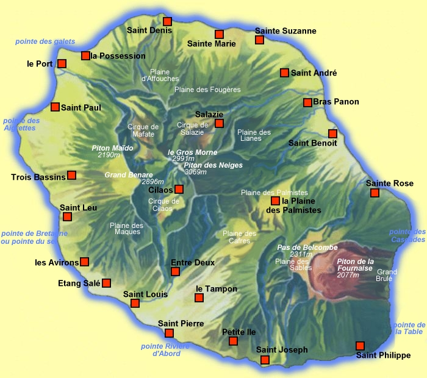

Cette carte a été dessinée vers 2000 sur la base d'un dépliant touristique rapporté de la Réunion. Elle a souvent été reprise sur le web mais ne représente qu'une vision estétique de cette île avec les points géographiques escenciels. Pour une carte plus complète et jour, je peux vous conseiller d'aller directement sur OpenStreetmap.
